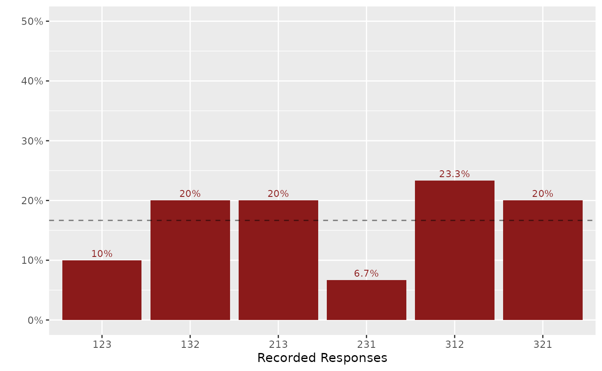

4. Visualizing Rankings
Yuki Atsusaka and Seo-young Silvia Kim
Source:vignettes/v4-visualizing-rankings.Rmd
v4-visualizing-rankings.RmdThe following code chunk shows how to plot the distribution of ranking profiles. This can help eyeball whether the ranking data is uniformly distributed, which can of course be formally tested.
library(combinat)
#>
#> Attaching package: 'combinat'
#> The following object is masked from 'package:utils':
#>
#> combn
library(rankingQ)
set.seed(100)
tab <- lapply(permn(seq(3)), paste0, collapse = "") |>
sample(30, replace = TRUE) |>
unlist() |>
table() |>
table_to_tibble()
plot_dist_ranking(tab, ylim = 0.5)